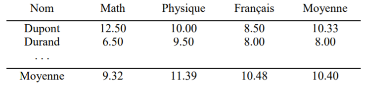
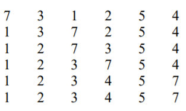

TD Algorithmique
1.⚓︎
Trouver une définition récursive du PGCD de deux entiers et écrire l’algorithme correspondant.
Réponse
PGCD(A,B): A, B : entiers
début
si A mod B = 0
alors
retourner B
sinon
retourner PGCD(B,A mod B)
fin
2.⚓︎
Trouver un algorithme récursif permettant de calculer la puissance d’un nombre x^y. Attention : y pourra être éventuellement négatif
(insérer image)
Réponse
Puissance(x,y): x, y : réels
début
si y=0
alors
retourner 1
si y>0
alors
retourner x*Puissance(x,y-1)
sinon
retourner (1/x)*Puissance(x,y+1)
fin
3.⚓︎
Trouver un algorithme récursif permettant d’inverser une chaîne de caractères (‘NF01’ devient ‘10FN’, ‘bonjour’ devient ‘ruojnob’…).
Réponse
Inversion(S): S : chaîne
début
si S=" "
alors
retourner S
sinon
retourner Inversion(copie(S,2,longueur(S)))+S[1]
fin
4.⚓︎
En déduire un algorithme permettant d’indiquer si un mot est un palindrome (identique à l’endroit et à l’envers, par exemple : ‘noyon’ ou ‘rever’).
Réponse
Palindrome(S): S : chaîne
début
si longueur(S)<=1
alors
retourner Vrai
sinon
si S[1]=S[longueur[S]]
alors
retourner Palindrome(copie(S,2,longueur(S)-1))
sinon
retourner Faux
fin
5.⚓︎
Ecrire une version récursive de l’algorithme de recherche dichotomique.
Recherche dichotomique
On rappelle que la recherche dichotomique est une recherche par approximations successives dans une liste ordonnée (triée par ordre croissant de ses valeurs). On compare l'élément recherché à celui situé en milieu de liste. S'il est plus grand, on recommence avec la moitié supérieure de la liste, sinon avec la moitié inférieure de la liste, jusqu'à convergence vers l'élément recherché (égalité = succès), ou jusqu'à ce qu'il n'y ait plus aucun élément à comparer (liste vide). Dans ce cas, l'élément recherché était absent de la liste. Ecrire un algorithme dichotomie permettant d'effectuer une recherche dichotomique dans un tableau de 100 entiers.
Réponse
Dicho(T,val,d,f): T : tableau val : entier d,f : entiers
début
si d > f
alors
retourner 0
sinon
n <--- (d+f)/2
si T[n] = val
alors
retourner n
sinon
si val>T[n]
alors
retourner Dicho(T,val,n+1,f)
sinon
retourner Dicho(T,val,d,n-1)
fin
1.⚓︎
Définir le type date permettant de représenter une date comportant le numéro du jour et le numéro du mois (14 7, 25 12, 31 12, ...).
Ecrire un algorithme jour_du _lendemain qui détermine la date du lendemain d’un jour donné. On supposera que l’année n’est pas bissextile.
Réponse
date = enregistrement
jour : entier (1,31)
mois : entier (1,12)
Algorithme jour_du_lendemain
variables :
d1,d2 : date
max_j : entier
début
Afficher("Donnez une date : jour et mois)
lire(d1.jour,d1.mois)
si(d1.mois = 2)
alors
max_j <--- 28
sinon si (d1.mois est dans [1,3,5,7,8,10,12])
alors
max_j <--- 31
sinon
max_j <--- 30
d2.jour <--- d1.jour + 1
si (d2.jour > max_j)
alors
d2.jour <--- 1
si (d2.jour = 1)
alors
d2.mois <--- d1.mois + 1
si (d2.mois = 13)
alors
d2.mois <--- 1
sinon
d2.mois <--- d1.mois
Afficher("Le jour suivant est", d2.jour, d2.mois)
fin
Il faudrait compléter l'algorithme avec une fonction de vérification de la cohérence de la date
2.⚓︎
Un supermarché désire créer un tableau contenant la liste des prix de tous les articles disponibles en rayon. Ecrire un algorithme qui écrit dans un tableau la liste des articles avec leur prix (entrés au clavier). On désire ensuite calculer le prix moyen des articles en rayon. On aimerait, pour conclure, rechercher le nombre d'articles pour lesquels le prix est supérieur à un tarif entré par l'utilisateur. Par exemple, on voudrait savoir combien d'articles sont vendus à plus de 500 euros.
Réponse
article = enregistrement
nom : chaîne
prix : réel
Algorithme
variables :
i, N, Taille, nb : entier
S, Tarif : réel
début
#Saisie des articles
afficher ("Combien y a-t-il d'article ?")
lire (N)
T : tableau de N article
i <--- 0
répéter
i <--- i + 1
afficher("Nom de l'article :")
lire(T[i].nom)
afficher("Prix de l'article :")
lire(T[i].prix)
tant que (T[i].prix > 0 et i <= N)
Taille <--- i - 1
#Prix moyen
pour i variant de 1 à Taille
S <--- S + T[i].prix
afficher("Le prix moyen des articles est", S/Taille)
#Recher articles sup
afficher ("Donnez un prix"
lire(Tarif)
nb <--- 0
pour i variant de 1 à Taille
si(T[i].prix >= Tarif)
alors
nb <--- nb + 1
afficher(nb, "articles dont le prix est supérieur ou égal au tarif entré")
3.⚓︎
On dispose d’un tableau d’enregistrements ayant la structure suivante : nom, prénom, âge.
a) Ecrire un algorithme avec un MENU permettant de proposer l’ensemble des actions à réaliser (cf liste ci-dessous). Une boucle sera effectuée jusqu’à ce que l’utilisateur ait choisi 0 pour sortir. L’algorithme vérifiera que le choix de l’utilisateur est un chiffre compris entre 0 et 6. Si ce n’est pas le cas, son choix lui sera demandé à nouveau.
Réponse
etudiant = enregistrement
nom : chaîne
prenom : chaîne
age : entier
Algorithme MENU
variables
choix : entier
début
répéter
afficher("Tapez 1 : Stockage des informations des étudiants dans le tableau")
afficher("Tapez 2 : Afficher l’ensemble du tableau (liste de tous les étudiants)")
afficher("Tapez 3 : Ajout d’un étudiant")
afficher("Tapez 4 : Recherche d’un étudiant")
afficher("Tapez 5 : Suppression d’un étudiant")
afficher("Tapez 6 : Modification d’un étudiant")
afficher("Tapez 0 : Quitter")
répéter
afficher("Entrez votre choix")
lire(choix)
jusqu'à (choix >= 0 et choix <= 6)
jusqu'à choix = 0
b) Ecrire les algorithmes pour réaliser les actions suivantes :
1. Stockage de l’ensemble des étudiants dans le tableau
2. Afficher l’ensemble du tableau (liste de tous les étudiants)
3. Ajout d’un étudiant
4. Recherche d’un étudiant
5. Suppression d’un étudiant
6. Modification d’un étudiant
Algorithme de stockage
Algorithme STOCKAGE
input
max : entier
T : tableau de max etudiant
variables
i, nb_etu : entier
début
répéter
afficher("Donner le nombre d'étudiants")
lire(nb_etu)
jusqu'à (nb_etu > 0 et nb_etu <= max)
pour i variant de 1 à nb_etu faire
afficher("Donnez le nom et le prénom")
lire(T[i].nom, T[i].prenom)
afficher("Donnez l'âge")
lire(T[i].age)
retourner nb_etu
fin
Algorithme d'affichage
Algorithme AFFICHAGE
input
max : entier
T : tableau de max etudiant
nb_etu : entier
variables
i : entier
début
pour i variant de 1 à nb_etu faire
afficher("Etudiant", i, ":", T[i].nom, T[i].prenom, T[i].age)
fin
Algorithme d'ajout
Algorithme AJOUT
input
max, nb_etu : entier
T : tableau de max etudiant
début
si nb_etu < max
alors
nb_etu <--- nb_etu + 1
afficher("Donnez le nom et le prénom")
lire(T[nb_etu].nom, T[nb_etu].prenom)
afficher("Donnez l'âge")
lire(T[nb_etu].age)
sinon
afficher("Impossible d'ajouter un étudiant")
retourner nb_etu
fin
Algorithme intermédiaire : RECHERCHE_indice
Algoritme RECHERCHE_indice
input
max, nb_etu : entier
T : tableau de max etudiant
nom : chaîne
prenom : chaîne
variables
i : entier
début
i <--- 1
tant que (i <= nb_etu et (T[i].nom <> nom ou T[i].prenom <> prenom))
i <--- i + 1
fin tant que
retourner i
fin
Algorithme de recherche
Algorithme RECHERCHE
input
nb_etu, max : entier
T : tableau de max etudiant
variables
nom, prenom : chaîne
i : entier
début
afficher("Donnez le nom et le prénom à rechercher")
lire(nom, prenom)
i <--- RECHERCHE_indice(nb_etu, max, T, nom, prenom)
si(i > nb_etu)
alors
afficher("L'étudiant n'existe pas")
sinon
afficher("Nom : ", T[i].nom, "Prénom : ", T[i].prenom, "Âge : ", T[i].age)
fin
Algorithme de Suppression
Algorithme SUPRESSION
input
nb_etu, max : entier
T : tableau de max etudiant
variables
nom, prenom : chaîne
i : entier
début
afficher("Donnez le nom et le prénom à rechercher")
lire(nom, prenom)
i <--- RECHERCHE_indice(nb_etu, max, T, nom, prenom)
si(i > nb_etu)
alors
afficher("L'étudiant n'existe pas")
sinon
nb_etu = nb_etu - 1
pour j variant de i à nb_etu faire
T[j] <--- T[j+1]
fin
Algorithme de Modification
Algorithme MODIFICATION
input
nb_etu, max : entier
T : tableau de max etudiant
variables
nom, prenom : chaîne
i : entier
début
afficher("Donnez le nom et le prénom à rechercher")
lire(nom, prenom)
i <--- RECHERCHE_indice(nb_etu, max, T, nom, prenom)
si(i > nb_etu)
alors
afficher("L'étudiant n'existe pas")
sinon
afficher("Donnez le nom et le prénom")
lire(T[i].nom, T[i].prenom)
afficher("Donnez l'âge")
lire(T[i].age)
fin
4.⚓︎
On dispose d’un tableau dont chaque élément possède la structure suivante :
type Objet élève
nom : chaîne
prenom : chaîne
math : réel
physique : réel
français : réel
Ecrire un algorithme qui exploite ce tableau pour afficher la liste des étudiants avec leur note en Maths, en Physique, en Français, ainsi que leur moyenne.
Par exemple, nous pourrions avoir les informations suivantes :

On supposera que le nombre d’élèves est inférieur ou égal à 100.
Réponse
eleve = enregistrement
nom : chaîne
prenom : chaîne
math : réel
physique : réel
français : réel
Algorithme Affichage
Input
T : tableau de 100 eleve
nb_eleve : entier
variables
i : entier
M_M,M_P,M_F,moy : réel
début
M_M <--- 0
M_P <--- 0
M_F <--- 0
afficher("Nom Prénom Math Physique Français Moyenne")
afficher("__________________________________________")
pour i variant de 1 à nb_eleve faire
afficher(T[i].nom," ",T[i].prenom," ",T[i].math," ",T[i].physique," ",T[i].français," ",(T[i].math + T[i].physique + T[i].français)/3)
M_M <--- M_M + T[i].math
M_P <--- M_P + T[i].physique
M_F <--- M_F + T[i].français
M_M <--- M_M/nb_eleve
M_P <--- M_P/nb_eleve
M_F <--- M_F/nb_eleve
moy <--- (M_M + M_P + M_F)/3
afficher("Moyenne ", M_M," ",M_P," ",M_F," ",moy)
1.⚓︎
On souhaite pouvoir gérer les amis de deux personnes données (associées à deux variables, A et B), sur le fameux réseau social « livre facial ». Le nombre maximum d’amis pris en compte est de 255. Un ami sera défini uniquement par un numéro, représentée par un entier. On aurait pu associer à ce numéro des caractéristiques associées, telles que nom, prénom, email, adresse, téléphone, mais nous ne vous le demandons pas (nous garderons donc simplement un numéro allant de 1 à 255, afin de simplifier le problème). On peut à tout moment ajouter de nouveaux amis, ou en supprimer, pour chacune des deux personnes A et B. Bref, cet ensemble d’amis évolue constamment.
1) Définir le type de données à utiliser et la déclaration de variables pour ce problème.
Réponse
Num : 1,...,255
AMIS : ensemble de num
A,B : AMIS
2) Ecrire un algorithme pour ajouter un ami à l’une des deux personnes, A ou B.
Réponse
Ajouter Num à un ensemble A ou B : x : ensemble (x=A ou x=B)
x <--- x + [Num]
(algo à compléter)
3) Ecrire un algorithme permettant de supprimer un ami l’une des deux personnes, A ou B
Réponse
Supprimer Num d'un ensemble A ou B
x <--- x - [Num]
4) Réaliser un algorithme utilisée pour trouver les amis communs aux deux personnes A et B.
Réponse
x <--- A*B #x est l'intersection des deux ensembles
si l'on doit afficher :
pour i variant de 1 à 255 faire
(compléter)
5) Comment rechercher les amis d’une personne qui ne sont pas amis de l’autre ?
Réponse
x <--- A - B
2.⚓︎
On souhaite pouvoir gérer des commandes de pizzas, dans une micro entreprise gérée par deux jeunes auto entrepreneurs sympathiques, mais sans beaucoup de moyens (Camille et Léon). Il n’y a que 4 types de pizzas possibles : Margarita, Regina, Reine, et Calzone. Le nombre maximum de commandes prises en compte chaque jour est de 255. Une commande sera définie uniquement par un numéro, représentée par un entier. On aurait pu associer à ce numéro des caractéristiques associées, telles que nom, prénom, email, adresse, téléphone du client, mais nous ne vous le demandons pas (nous garderons donc simplement un numéro allant de 1 à 255, afin de simplifier le problème).
On peut à tout moment ajouter de nouvelles commandes, ou en supprimer, pour chacune des pizzas vendues par cette entreprise (Regina, Margarita, Reine et Calzone). Bref, cet ensemble de commandes évolue constamment, pour chaque type de pizzas. Un client pourra commander plusieurs types de pizzas lors d’une même commande (mais une seule pizza par type, le système ne sachant pas gérer le nombre d’exemplaires souhaités). Dans ce cas, le même numéro de commande sera utilisé pour chaque type de pizza.
1) Définir le type de données à utiliser et la déclaration de variables pour ce problème.
Réponse
Num : 1,...,255
COMMANDES : ensemble de Num
Reg, Marg, Rei, Cal : COMMANDES
2) Ecrire un algorithme pour ajouter une commande de pizza (Reine, Regina, Margarita, Calzone).
Réponse
afficher("Donner le numéro de commande")
lire(Num)
afficher("Voulez-vous une regina, tapez O ou N")
lire(rep)
si rep = "O"
alors
Reg <--- Reg + [Num]
afficher("Voulez-vous une margarita, tapez O ou N")
lire(rep)
si rep = "O"
alors
Marg <--- Marg + [Num]
afficher("Voulez-vous une reine, tapez O ou N")
lire(rep)
si rep = "O"
alors
Rei <--- Rei + [Num]
afficher("Voulez-vous une calzone, tapez O ou N")
lire(rep)
si rep = "O"
alors
Cal <--- Cal + [Num]
(plus simple avec un tableau d'ensemble et une boucle ...)
3) Ecrire un algorithme permettant de supprimer une commande de pizza (Reine, Regina, …).
Réponse
afficher("Donner le numéro")
lire(Num)
Reg <--- Reg - [Num]
Marg <--- Marg - [Num]
Rei <--- Rei - [Num]
Cal <--- Cal - [Num]
4) Ecrire un algorithme qui détermine l’ensemble des commandes dans lesquelles le client souhaite obtenir les 4 types de pizzas (même numéro de commande pour chacune des 4 pizzas).
Réponse
X <--- Marg * Reg * Rei * Cal
pour i variant de 1 à 255
si i dans X
alors
afficher i
5) Comment rechercher les commandes passées pour avoir des Reginas et des Margaritas mais pas des Reines ni des Calzones ?
Réponse
X <--- Marg * Reg - Rei - Cal
3.⚓︎
Vous partez en randonnée et votre sac à dos n’est toujours pas préparé. Vous avez développé un algorithme qui vous permet de contrôler le remplissage et le contenu de votre sac à dos.
Votre algorithme présente les fonctionnalités suivantes :
1)Les objets que vous pouvez mettre dans votre sac à dos sont : sac_couchage, chaussures, gourde, chaussettes, linge, pain. Donnez la définition d’un type ensemble « objets » composé de tous ces éléments.
Réponse
objets : sac_couchage, chaussures, gourde, chaussettes, linge, pain
liste_objets : ensemble d'objets
sac : liste_objets
2) Donner un algorithme « remplir_sac ». Il vous permet de déposer des objets (parmi ceux définis dans « objets »). L’utilisateur peut arrêter ou continuer le remplissage du sac après avoir déposé un objet. Cet algorithme commence avec un sac vide et retourne un sac avec les objets déposés
Réponse
remplir_sac :
Variables :
obj : objets
Sac : liste_objets
rep : chaîne
Début
sac <--- []
répéter
afficher("Voulez-vous ajouter des objets dans le sac ? Tapez O ou N")
lire(rep)
Afficher("Indiquer l'objet à ajouter")
lire(obj)
sac <--- sac + [obj]
jusqu'à rep = N
retourner sac
Fin
(différent de la correction à consulter)
3) Donner un algorithme « affiche_sac » qui affiche à l’écran les objets présents dans le sac à dos.
Réponse
affiche_sac :
Variables :
i : objets
Début
afficher("Dans le sac il y a les objets suivants")
pour i variant dans liste_objets faire
si i dans sac
alors
afficher("- ", i)
Fin
(différent de la correction à consulter)
4) Donner un algorithme « vider_sac » qui permet de sortir un ou plusieurs objets du sac en fonction de votre demande et leur présence dans le sac. Cet algorithme commence avec un sac qui peut contenir des objets de l’ensemble « objets » et retourne le sac à dos sans les objets enlevés suivant le choix de l’utilisateur.
Réponse
vider_sac :
Variables :
rep : chaîne
obj : objets
Début
répéter
afficher("Voulez-vous retirer un objets du sac ? Tapez O ou N")
lire(rep)
afficher("Quel objet voulez-vous retirer ?")
lire(obj)
si obj dans sac
alors
sac <--- sac - [obj]
sinon
afficher("Cet objet n'est pas dans le sac à dos")
jusqu'à rep = N
Fin
(différent de la correction à consulter)
4.⚓︎
La FFD (Fédération Française de Danse) souhaite pouvoir gérer les inscriptions aux compétitions de danse sportive. Il y a deux sortes de danses :
- danses Latines (Samba, Cha Cha, Rumba, Paso Doble et Jive)
- danses Standards (Valse anglaise, Tango, Valse Viennoise, Slow Foxtrot et Quickstep).
Une manifestation sportive peut regrouper plusieurs compétitions (maximum 50), réparties par catégories d’âge (juvéniles, junior, youth, adultes, senior…) et des catégories de niveau : F, E, D, C, B, A, Open (toutes séries confondues). On a par exemple des compétitions en senior latines série B, open junior standards, adultes standards série C, Youth latines série E…
Chaque compétition est identifiée par un numéro, compris entre 1 et 50. Les danseurs sont inscrits par couples, identifiés par leur numéro de dossard. Pour simplifier le problème, nous supposerons qu’il n’y a que 120 couples maximum dans une même manifestation sportive (en réalité, il y en a beaucoup plus…).
Un couple est défini par son numéro de dossard, le nom et prénom du danseur et de la danseuse, leur classement national, leur classement international, l’adresse email du danseur et celle de la danseuse, leur série en danse standards et leur série en danses latines, leur catégorie d’âge…
Les Couples peuvent être inscrits à une ou à plusieurs compétitions (par exemple Adulte latines série C, Open adultes standards, Open adultes latines, Adultes standards série B…)
Bien entendu, une même compétition regroupe plusieurs couples (une centaine, au maximum).
1) Définir le type de données à utiliser et les déclarations de variables pour ce problème.
Réponse
Dossard : 1,...,120
Couple : enregistrement
Num_doss : Dossard
Nom_danseur, Nom_danseuse,Prenom_danseur,Prenom_danseuse : chaîne de caractères
mail_danseur,mail_danseuse : chaîne de caractères
classement_nat : entier
classement_internat : entier
serie_standars : chaîne de caractères
serie_latine : chaîne de caractères
categ_age : chaîne de caractères
Competition : enregistrement
Num : entier
categ_age : chaîne de caractères
serie : chaîne de caractaires
Inscrits : Ensemble de Dossard
Variables :
danseurs : tableau[1,...,120] de Couple
Competitions : tableau[1,...,50] de Competition
2) Ecrire un algorithme pour inscrire un couple (), à partir de son numéro de dossard) dans une compétition donnée (définie par son numéro)
Réponse
Input :
C : Couple
Numero : Num de competition
début
Competitions[Numero].Inscrits <--- Competitions[Numero].Inscrits + [C.Num_doss]
3) Ecrire un algorithme en PASCAL permettant de retirer un couple (pour cause de blessure, de désistement ou de disqualification) d’une compétition donnée, identifiée par son numéro. On utilisera son numéro de dossard du couple.
Réponse
Input :
X : Num_doss du couple
Num : Num de la compétition
début
Competitions[Num].Inscrits <--- Competitions[Num].Inscrits - [X]
4) Réaliser un algorithme en PASCAL pour rechercher le nom et prénom et adresse email des couples inscrits dans deux compétitions données. Par exemple, qui est à la fois en senior B latines (compétition n°5) et en Open senior Standards (compétitions n°36) ?
Réponse
Input :
A,B : entier
début :
X <--- Competitions[A].Inscrits * Competitions[B].Inscrits
pour i variant de 1 à 120 faire
si i dans X
alors
afficher("Dossard :",i)
afficher("Nom danseur :", Danseurs[i].Nom_danseur)
afficher("Prénom danseur :", Danseurs[i].Prenom_danseur)
afficher("Nom danseuse :", Danseurs[i].Nom_danseuse)
afficher("Prénom danseuse :", Danseurs[i].Nom_danseuse)
afficher("Mail danseur :", Danseurs[i].mail_danseur)
afficher("Mail danseuse :", Danseurs[i].mail_danseuse)
fin
5) Ecrire un algorithme en PASCAL pour rechercher les couples (nom, prénom et adresse email) inscrits dans une compétition mais pas dans une autre. Par exemple, qui est en senior B latines (compétition n°5) mais pas en Open senior Standards (compétitions n°36) ?
Réponse
Input :
A,B : entier
début :
X <--- Competitions[A].Inscrits - Competitions[B].Inscrits
pour i variant de 1 à 120 faire
si i dans X
alors
afficher("Dossard :",i)
afficher("Nom danseur :", Danseurs[i].Nom_danseur)
afficher("Prénom danseur :", Danseurs[i].Prenom_danseur)
afficher("Nom danseuse :", Danseurs[i].Nom_danseuse)
afficher("Prénom danseuse :", Danseurs[i].Nom_danseuse)
afficher("Mail danseur :", Danseurs[i].mail_danseur)
afficher("Mail danseuse :", Danseurs[i].mail_danseuse)
fin
1.⚓︎
Tri d’une liste de nombres. On dispose de N valeurs numériques rangées dans un tableau pouvant contenir MAX valeurs. Il s’agit de ranger par ordre croissant ces N valeurs, soit dans le même tableau, soit dans un autre tableau. Par exemple, si on dispose au départ des 6 valeurs 7, 3, 1, 2, 5, 4, ils devront être rangés à la fin dans l’ordre 1, 2, 3, 4, 5, 7. On utilisera un algorithme simple, appelé tri de sélection, que l’on peut décrire de la manière suivante :
On cherche le plus petit nombre et on le permute avec le nombre placé en première position, on cherche le plus petit des nombres restants et on le permute avec le nombre placé en seconde position,...
Avec notre exemple cela donnerait ceci :

L’algorithme demandé aura la structure suivante : lecture d’un tableau d’entiers, tri de ce tableau et affichage des nombres ainsi triés.
Constantes
Constantes :
MAX <--- 100
Algorithme Saisie
Algorithme Saisir(Tab:tableau d'entiers):entier
variable :
i,n : entier
début
répéter
afficher("Donnez le nombre d'éléments")
lire(n)
tant que n<=0 ou n>MAX
pour i variant de 1 à n faire
afficher("Donnez l'élément n°", i)
lire(T[i])
retourner n
fin
Algorithme Affichage
Algorithme Afficher(Tab:tableau d'entiers, n:entier)
Variables :
i:entier
début
pour i variant de 1 à n faire
afficher(Tab[i])
fin
Algorithme de tri
Algorithme Tri_Tableau(Tab:tableau d'entiers,n:entier)
Variables:
i,j,indice_min,min:enier
début
pour i variant de 1 à n-1 faire
indice_min <--- i
min <--- Tab[i]
pour j variant de i+1 à n faire
si Tab[j] < min
alors
indice_min <--- j
min <--- Tab[j]
Tab[indice_min] <--- Tab[i]
Tab[i] <--- min
fin
Saisie, Tri et Affichage
Algorithme Saisir_Trier_Afficher
Variables:
Tab : tableau d'entiers
n : entier
début
n <--- Saisir(Tab)
Tri_Tableau(Tab,n)
afficher(Tab,n)
fin
2.⚓︎
Tri d’une liste de chaînes de caractères. On souhaite à présent TRIER un tableau composé d’une liste de N noms ou prénoms de personnes de votre carnet d’adresses. Tous les noms et prénoms sont en MAJUSCULES non accentuées (rien en minuscule ou avec accents). On dispose d’un répertoire de max noms ou prénoms possibles (strings) rangés dans le tableau. Mais le nombre réel de données est N (avec N < MAX). Il s’agit de ranger, dans le même tableau, par ordre croissant, ces valeurs, selon l’ordre alphabétique (ou ordre lexicographique), les noms commençant par ‘A’ en premier, et ceux commençant par ‘Z’ en dernier… Par exemple, si on dispose au départ des 6 valeurs ‘ALAIN’, ‘MARIE, ‘FRANCOIS’, ‘PHILIPPE’, ‘SAMUEL’, ‘GWENN’, elles devront être rangées à la fin dans l’ordre valeurs ‘ALAIN’, ‘FRANCOIS’, ‘GWENN’, ‘MARIE, ‘PHILIPPE’, ‘SAMUEL’. On utilisera un algorithme simple, appelé tri de sélection, qui a été décrit dans le précédent exercice.
Réponse
Algorithme 1. à adapter, faire attention aux < selon le language de programmation